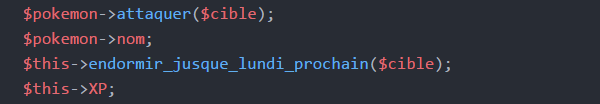

Vous vous souvenez du symbole "->" ?
Rappel : on l'utilise pour appeler
un attribut ou une fonction d'un objet. Voici quelques exemples plic-ploc
pour vous rafraîchir la mémoire :

(rappel 2 : "$this" est un mot-clé faisant référence à l'objet appelant, donc, flèche aussi. )
Mais voilà, c'est ici que l'histoire se corce légèrement : on peut aussi avoir besoin d'appeler un élément appartenant à une classe, et non à un objet. (Vous découvrirez les types d'éléments au point suivant.)
Etape 1, retenir que :
Etape 2, les éléments d'une classe :